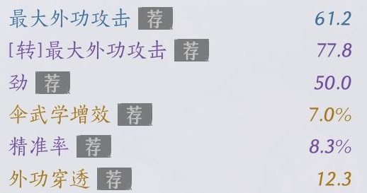

当前数据库无装备，请点击右上角 录入装备 按钮进行装备录入。
OCR识别图片
请点击右上角 "+ 新建角色" 按钮创建新角色

参考示例图进行截图，注意背景干净，文字清晰，尽量不要截图到别的元素（如词条左边那条竖线）。注意：OCR文字识别结果有可能不准确，需手动调整。
点击上传文件或按 Ctrl+V 粘贴图片
准备识别...
请选择左侧装备部位后开始分析...
最佳配装功能开发中...
计算中...
计算中...
计算中...
加载中...
⚠️ 警告
导入数据将完全覆盖当前角色（）的所有装备数据！